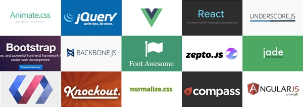

Javascript
Created by Rajendrasinh Parmar / @RAJENDRASINH_09
A Brief History
It All Began in the 90's
Not to be confused with Java
- It was created in 10 days in May 1995 by Brendan Eich
- The original name was Mocha, a name chosen by Marc Andreessen
- In September of 1995 the name was changed to LiveScript
In December of 1995 upon receiving a trademark license from Sun, the name JavaScript was adopted.
A Brief History
- 1996 - 1997 JavaScript was taken to ECMA to carve out a standard specification
- ECMAScript 2 in 1998
- ECMAScript 3 in 1999, which is the baseline for modern day JavaScript
- In early 2009 to rename ECMAScript 3.1 to ECMAScript 5
Versions and Evolution

Features
- Universal support
- Imperative and structured
- Dynamic
- Prototype-based (object-oriented)
- Functional
- Delegative
- Miscellaneous
- Vendor-specific extensions
Asynchronous execution pattern
Debugging javascript in web browser
JAvascript Libraries and frameworks
List of Frameworks and Libraries is here.